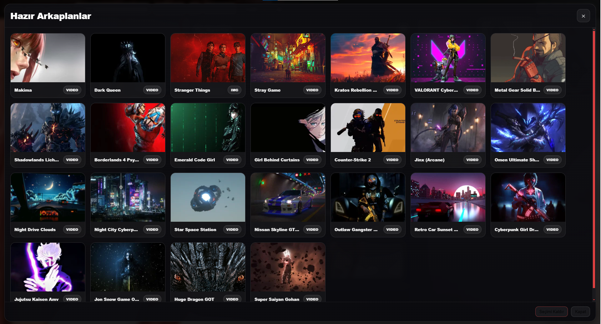
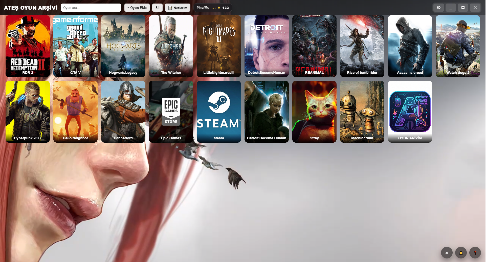

Akıllı Başlatma
Steam, Epic, Rockstar ve launcher tabanlı oyunları tek merkezden aç.
PROFESYONEL OYUN YÖNETİM SİSTEMİ
Oyunlarını tek merkezden yönet. Güçlü arayüz, akıllı başlatma sistemi, modern görünüm, notlar ve düzenli arşiv yapısıyla premium launcher deneyimi sunar.
ÖZELLİKLER
Güçlü launcher mantığını düzenli arşiv sistemiyle birleştiren, kararlı ve şık bir deneyim.
Steam, Epic, Rockstar ve launcher tabanlı oyunları tek merkezden aç.
Koyu tema, premium ışık efektleri ve güçlü görsel kimlik ile profesyonel görünüm.
Arkaplan, kapak yapısı, görünüm düzeni ve launcher hissi üzerinde tam kontrol.
Arşivini düzenle, kişisel notlarını ekle ve oyun yapını temiz şekilde yönet.
Hızlı açılış, sade akış, temiz tasarım ve günlük kullanım için güçlü yapı.
Yeni sürümler, ek modüller ve gelişmiş özellikler için hazır altyapı.
GALERİ
Arayüz, launcher ve oyun arşivi yapısına odaklı görsel sunum.


Güçlü arayüz, modern görünüm ve premium launcher hissi ile oyun arşivini tek merkezden yönet.
SÜRÜM
Stabil sürüm bilgileri ve yayınlanan kurulum dosyası.
Mevcut sürüm
Kararlı sürüm. Modern launcher deneyimi, geliştirilmiş görünüm ve düzenli kullanım akışı sunar.
İNDİR
Güncel kurulum dosyasını indir ve ATEŞ Oyun Arşivi deneyimini hemen kullanmaya başla.
İLETİŞİM
Yeni sürümler, güncellemeler ve proje gelişmeleri için sosyal medya hesaplarını takip edebilirsin.